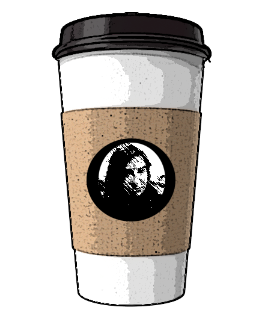
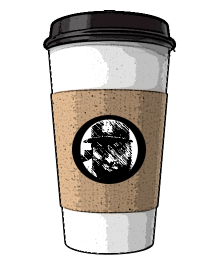
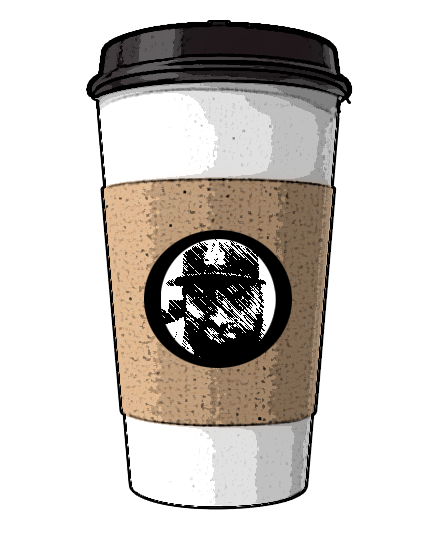
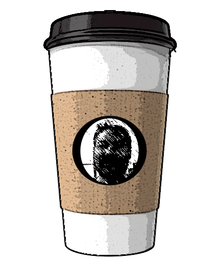
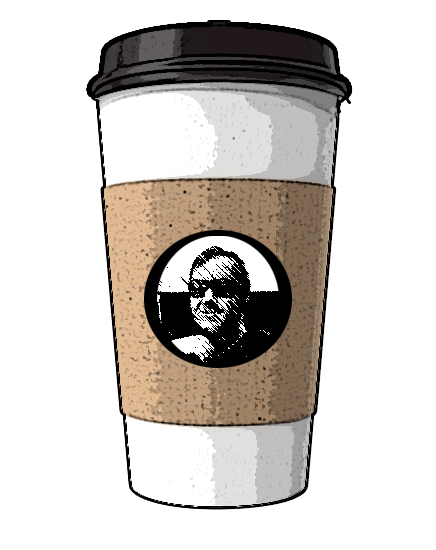

Hi, my name is Brianna. I am a Computer Science and Engineering undergraduate at the University of Nevada, Reno. My involvement in the implementation of the application was mainly on the backend. I was responsible for parsing and formatting the Ontology data, data conversion, and building and hosting the web service.
 

Hello, my name is Christopher and I am Computer Science & Engineering undergraduate at University of Nevada, Reno. I worked primarily on the front end and UI design for the application. That required me me to design in Photoshop, and code in typescript and html. I was also the co-manager on the project with Matthew.
I aspire to further my life long learning and apply for a Masters program at UNR. I have not found a field that I wish to specialize in, but I have gained an enthusiasm for teaching. After I graduate from the program, I want to work in the field for at least a decade before returning for an Education degree.
I hope you enjoy our hard work.

Hi, my name is Matthew and I am an undergraduate in Computer Science & Engineering at the University of Nevada, Reno. My primary roles for the application were being co-manager with Christopher, and working on the back end web services using Python.

Hi, my name is Nicholas and I am an undergraduate in Computer Science & Engineering at the University of Nevada, Reno. My role for the project was the coding of the application's front end. I worked with Christopher's designs to build the user interface, and built out the application's hierarchy reading.
My major aspiration for my college carrer is to learn computer graphics and animation. Ever since I was a kid, I wanted to be an animator. As I grew up, I got more into computers. Computer graphics animation combines my two interests.
INSERT TEXT HERE
INSERT TEXT HERE
INSERT TEXT HERE
INSERT TEXT HERE